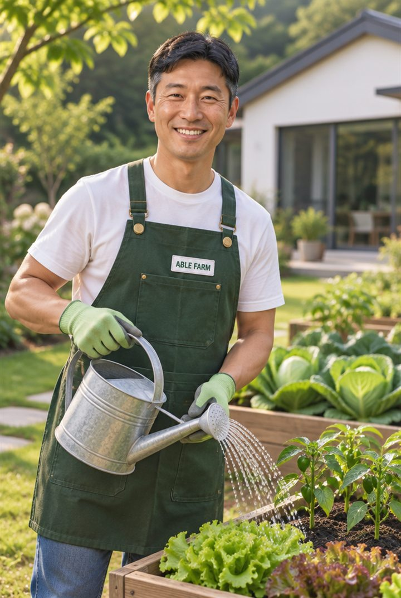
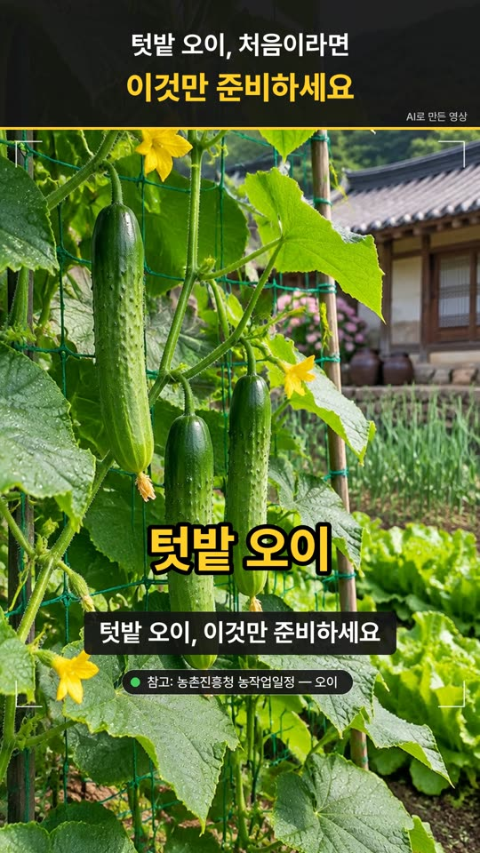
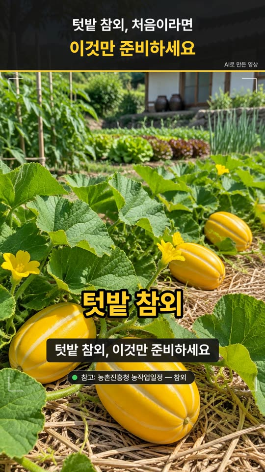
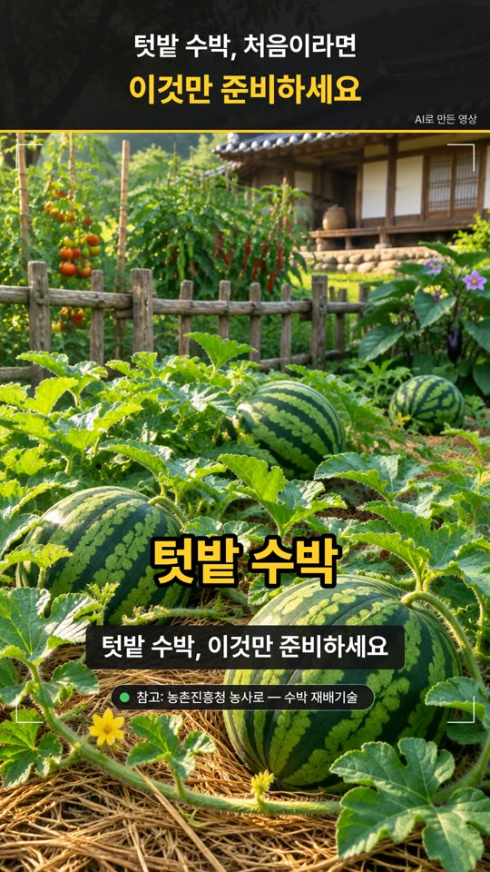
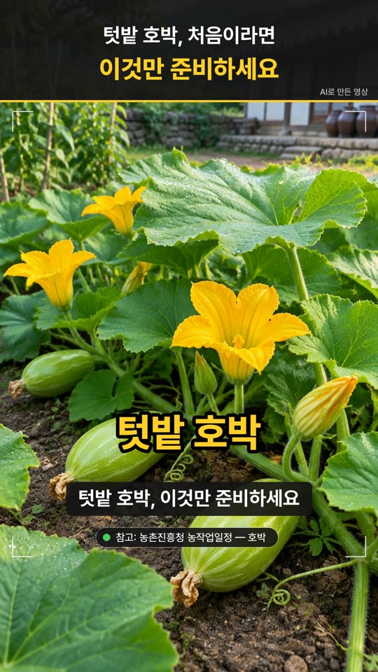

에이블 농박사의
텃밭 교실

📚첫걸음 시간표 (8교시 중 1교시 공개)
땅 고르기부터 물 주기까지 8교시를 준비하고 있어요. 30초 영상으로 순서대로 따라 해요. 새 교시가 나오는 대로 여기에 열려요.
텃밭 자리 고르기
- 햇빛이 잘 드는 곳
- 물 빠짐이 좋은 흙 — 진흙과 모래가 알맞게 섞인 모래참흙
- 물 쓰기 편하고 집에서 가까운 곳
- 차 매연·먼지에서 떨어진 곳
- 처음엔 5㎡(한 평 반)면 충분 — 상추·쑥갓·시금치부터 농촌진흥청
⏱쉬는 시간 궁금증
쉬는 시간마다 제일 많이 받는 질문이에요. 30초 영상으로 하나씩 답해 드릴게요. 답은 지금도 아래 「질문 게시판」에서 볼 수 있어요.
🥬처음 키우기 쉬운 작물 12가지
농촌진흥청은 상추·시금치·쑥갓·감자·강낭콩 같은 작물을 「쉬움」, 오이·수박·참외를 「어려움」으로 나눠요. 쉬운 것부터 시작하세요.
난이도는 농촌진흥청 분류예요(열무·들깨는 분류에 없고, 작은 텃밭에 알맞은 채소로 소개돼요). 심는 때는 노지 기준이고, 지역·날씨에 따라 서리와 밤 기온을 보고 조절하세요. 「농가 기준」은 텃밭용 숫자가 따로 없어 농작업일정을 참고한 값이에요.
🗓이달의 텃밭 할 일
지금 달이 먼저 열려요. 한 일은 체크해 두세요.
더 자세한 작물별 일정은 재배력에서 볼 수 있어요.
😅텃밭 초보가 자주 하는 실수 12가지
카드를 눌러 뒤집어 보세요. 왜 문제인지, 어떻게 하면 되는지 나와요. 몇 개나 해 봤나요?
🤔첫해는 잘 됐는데, 왜 이듬해엔 안 될까?
텃밭 2년 차에 많이 겪는 일이에요. 흔한 원인 8가지와 알아채는 법, 대처법이에요.
🪱흙 관리, 이렇게 하세요
흙이 건강해야 해마다 잘 돼요. 초보가 기억할 것만 모았어요.
1. 돌려짓기 — 같은 「집안」은 자리를 바꿔요
토마토 자리에 고추를 심으면 다른 작물 같아도 둘 다 가지과라서 이어짓기가 돼요. 한 번 심은 뒤 그 자리를 쉬게 하면 좋은 기간이에요. 농촌진흥청
| 집안(과) | 이어 심어도 비교적 괜찮음 | 1년 쉬기 | 2년 쉬기 | 3년 쉬기 | 5년 쉬기 |
|---|---|---|---|---|---|
| 배추과 | 양배추·무·브로콜리 | 배추 | |||
| 가지과 | 감자 | 토마토·피망 | 가지 | ||
| 박과 | 호박 | 오이 | |||
| 콩과 | 콩 | 땅콩 | 강낭콩 | 완두 | |
| 국화과 | 상추 | ||||
| 명아주과 | 시금치·비트 | ||||
| 파 종류 | 양파·부추 | 파 | |||
| 그 밖에 | 옥수수·당근·고구마 |
텃밭을 3~5칸으로 나눠 해마다 칸을 돌리고, 흙심을 살리는 콩과 작물을 섞어 넣으면 좋아요. 고추는 가지과이지만 쉬는 기간 자료는 따로 없어요.
🍂 다 썩은 퇴비
- 냄새 없는 「다 썩은(완숙) 퇴비」만
- 심기 2~3주 전에 넣고 흙과 섞기
- 봄 3월 하순~4월 상순 / 가을 8월 상순~중순
- 10㎡(약 3평)에 10~20kg 안팎 — 「많이」가 아니라 「알맞게」
🪨 석회
- 퇴비와 같이 심기 2~3주 전
- 10㎡에 1~2kg 안팎, 흙 검사 결과가 있으면 그대로
- 시금치·완두·강낭콩·양파는 산성 흙에 특히 약해요
- 화학비료는 그보다 늦게, 밭 만들기 1주 전
⛰ 이랑과 물 빠짐
- 두둑 높이 20~30cm, 고랑 폭 30cm 안팎
- 고추·감자·고구마는 좁고 높은 두둑, 잎채소는 넓은 두둑
- 비 온 뒤 고랑에 물이 고이지 않게
🖤 덮기(멀칭)
- 검정 비닐·부직포로 두둑을 덮으면 잡초가 덜 나요
- 볏짚·우드칩 같은 식물 재료도 돼요
- 흙이 덜 마르고 덜 굳어요
🌾 쉬는 땅엔 풋거름
- 작물을 쉬는 동안 풋거름 작물(예: 헤어리베치·보리)을 길러 갈아엎으면 흙이 부드러워지고 물을 잘 머금어요
- 흙에 쌓인 비료 성분을 줄이는 방법으로도 소개돼요
❄ 겨울 정리
- 수확 끝난 작물·시든 포기는 걷어 내기
- 눈·비 대비 물길(배수로) 점검
- 쓴 화분·상자는 씻어 말리고, 남은 씨앗은 밀봉해 냉장
2. 흙 검사(토양검정) 받는 법 — 농업기술센터
내 밭 흙에 무엇이 모자라고 넘치는지 알려 주고 「비료 사용 처방서」를 줘요. 수확이 끝나고 다음 심기 전, 퇴비·비료를 뿌리기 전이 좋은 때예요. 농촌진흥청
- 땅 위 풀·찌꺼기를 걷고, 겉흙 한 삽을 걷어 내요
- 15cm 깊이까지 위아래 고르게 흙을 떠요
- 한 곳만 말고 밭 안 5~10곳에서 떠서 잘 섞어요
- 섞은 흙 1~2kg을 봉투에 담고 이름·날짜·밭 주소·작물을 적어요
- 시·군 농업기술센터에 맡겨요 (검정실이 없으면 도 농업기술원)
- 결과의 산도(pH)·유기물·석회 필요량 등을 보고 처방대로 넣어요 — 흙토람(soil.rda.go.kr)에서도 볼 수 있어요
🙋질문 게시판
다른 분들이 물어본 걸 주제별로 모아 뒀어요. 질문을 누르면 제가 답해 드려요. 찾는 게 없으면 맨 아래에서 손 들고 물어보세요.
질문은 계속 늘어나요. 답은 농촌진흥청 자료를 쉬운 말로 다시 정리한 거예요.
🍉작물편 — 조금 익숙해지면 도전!
오이·참외·수박·호박은 「어려운 작물」이에요. 첫걸음을 마친 뒤 도전해 보세요. 심는 때·간격·줄기 정리·수확을 30초 영상으로 정리했어요.

어려움

어려움

어려움

보통
영상은 안내 페이지에서 바로 볼 수 있어요. 수박 증상과 원인 7가지 영상도 함께 있어요.
✋ 손 들고 질문하기
여기 없는 질문, 잎이 이상할 때 — 우리 밭 사진을 보여 주시면 농박사가 같이 봐 드려요.
근거 자료
모두 농촌진흥청 농사로 자료를 바탕으로, 원문을 옮기지 않고 쉬운 말로 다시 정리했어요.
- 이달의 농업기술 「텃밭재배 초보자가 성공하려면 세밀한 디자인과 설계가 중요」 (국립원예특작과학원 도시농업과, 2018-03-15)
- 이달의 농업기술 「텃밭 가꾸기로 봄을 시작하세요」 (도시농업과, 2020-03-19)
- 이달의 농업기술 「빅데이터 분석을 통한 우리도 어엿한 도시농부! 텃밭가꾸기」 (2017-05-12)
- 이달의 농업기술 「수확량을 늘리고 해충 걱정 덜어주는 텃밭 재배법」 (도시농업과, 2021-04-05)
- 이달의 농업기술 「도시농부를 위한 가을텃밭 가꾸기 요령」 (도시농업과, 2018-10-05)
- 이달의 농업기술 「베란다를 활용한 텃밭 가꾸기」 (2018-02-28) · 「가을철 아파트 베란다 텃밭 가꾸기」 (2020-10-28)
- 이달의 농업기술 「추위 잘 견디는 잎채소로 겨울 식단 풍성하게」 (2019-11-28)
- 이달의 농업기술 들깻잎(2021-07-30) · 콩·팥 텃밭(2021-07-09) · 작물 궁합(2021-07-22) · 친환경 텃밭(2022-04-08) · 잡초 제거(2020-07-16) · 천연재료 해충관리(2020-05-14) · 달팽이(2026-07-27)
- 이달의 농업기술 「노지고추 아주심기 전 준비할 사항」 (2018-04-20) · 「김장용 무 잘 고르려면」 (2018-11-27)
- 이달의 농업기술 「시설재배지 토양 염류경감 요령」 (2023-04-07) · 「비료 적정 사용은 토양검정이 기본」 (2022-02-03) · 「풋거름 작물 토양 환원하면 1석3조 효과」 (2022-05-03)
- 농작업일정 — 상추·쑥갓·시금치·감자·강낭콩·고구마·들깨·토마토·고추·배추·무·마늘·양파
- 현장기술 상담결과 (텃밭 배추 모종 고사, 옥상 텃밭, 텃밭 고추, 관수량 문의) · 현장기술지원 「배추에 뿌리혹병이 발생했어요」 (2020-10-12, 사실 근거로만 참고)
- 병해충 공개상담 (방울토마토 시듦, 천연 추출물 살포 후 시듦, 배추밭 처음, 주말농장 옥수수 습해)
- 영상: 에이농티비 텃밭 첫걸음·텃밭 작물편 (장면은 AI로 만든 예시)